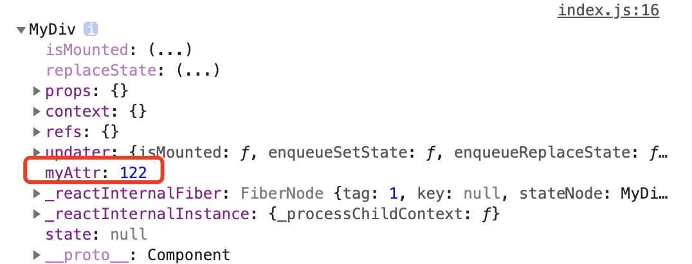

本文内容
react 元素的 ref 属性
react 元素中，ref 是一个特殊属性，利用它，我们可以得到元素本身或者是它挂载的DOM节点
class MyComponent extends React.Component {
constructor(props) {
super(props);
this.myRef = React.createRef();
}
render() {
return <div ref={this.myRef} />;
}
}
- 首先，
this.myRef = React.createRef();创建了一个 ref <div ref={this.myRef} />将 div 这个 dom 节点的 ref 属性设置成了{this.myRef}- 这个设置属性的含义是：将 div 这个 dom 节点（一个 JS 对象），赋值给
this.myRef.current - 也就是说，我们使用
this.myRef.current可以操纵这个 dom，就像是使用 CSS 选择器选择到了节点一样
例如
class MyComponent extends React.Component {
constructor(props) {
super(props);
this.myRef = React.createRef();
}
componentDidMount() {
this.myRef.current.innerHTML = '哈哈哈'
}
render() {
return <div ref={this.myRef} />;
}
}
ReactDOM.render(
<MyComponent />,
document.getElementById('root')
);
你将会看到元素的信息是
<div>哈哈哈</div>
这证明我们引用到了这个 div 节点，并且设置了它的属性
访问 Refs
当 ref 被传递给 render 中的元素时，对该节点的引用可以在 ref 的 current 属性中被访问。
const node = this.myRef.current;
ref 的值根据节点的类型而有所不同：
当
ref属性用于 HTML 元素时，构造函数中使用React.createRef()创建的ref接收底层 DOM 元素作为其current属性。class MyComponent extends React.Component { constructor(props) { super(props); this.myRef = React.createRef(); } componentDidMount() { this.myRef.current.innerHTML = '哈哈哈' } render() { return <div ref={this.myRef} />; } }这里就是接收了 div 元素作为 ref
当
ref属性用于自定义 class 组件时，ref对象接收组件的挂载实例作为其current属性。class MyComponent extends React.Component { constructor(props) { super(props); this.myRef = React.createRef(); } componentDidMount() { console.log(this.myRef.current); } render() { return <MyDiv ref={this.myRef}/>; } } class MyDiv extends React.Component { constructor(props) { super(props); this.myAttr = 122; } render() { return <div id={1}>sss</div>; } } ReactDOM.render( <MyComponent/>, document.getElementById('root') );
可以看到，我们返回的是这个 React 组件的实例
你不能在函数组件上使用
ref属性，因为他们没有实例。
回调 Ref
class AutoFocusInput extends Component {
componentDidMount () {
this.input.focus()
}
render () {
return (
<input ref={(input) => this.input = input} />
)
}
}
ReactDOM.render(
<AutoFocusInput />,
document.getElementById('root')
)
我们可以将一个回调函数传递给 ref，回调函数的第一个参数代表这个节点本身的引用。